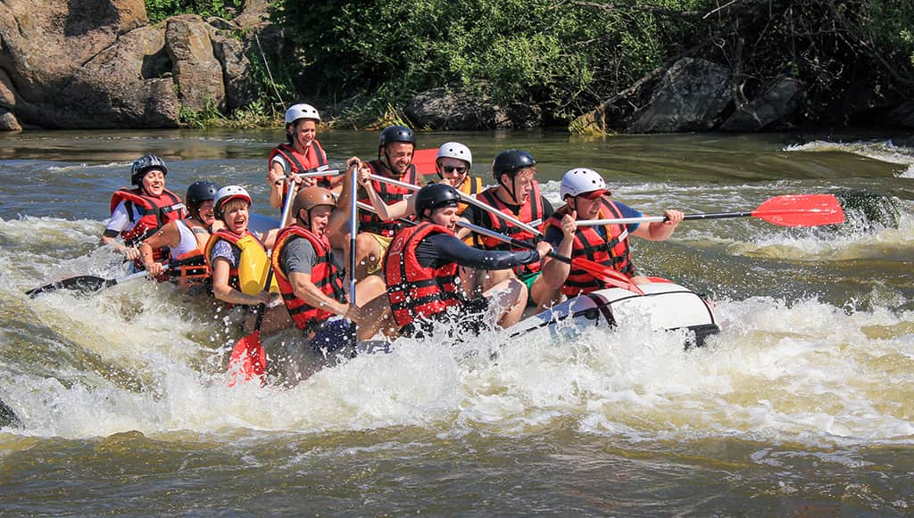

At Bolivia Rafting Adventure, our mission is to bring people closer to nature through thrilling river experiences. We believe in teamwork, courage, and respect for the environment. Our motto: "Ride the waves, live the adventure."

At Bolivia Rafting Adventure, our mission is to bring people closer to nature through thrilling river experiences. We believe in teamwork, courage, and respect for the environment. Our motto: "Ride the waves, live the adventure."
Bolivia Rafting was founded in 2012 with the vision of sharing the thrill of the Andean rivers and the natural beauty of Bolivia with adventurers from around the world. It began as the dream of a group of young nature and sports enthusiasts who believed rafting could be more than just an activity—it could be an experience of unity, courage, and respect for the environment. Since then, Bolivia Rafting has become a symbol of adventure, offering safe and memorable journeys for those who seek to challenge the waters and discover the magic of Bolivian landscapes.